My MSc dissertation at Glasgow Caledonian University. When family, flatmates or friends share a car, the person who drives more, or drives harder, is quietly subsidised by everyone else. DriveFair is an app concept that tracks each person's driving and splits the real costs fairly, including the wear and tear nobody counts.
- UX Researcher & Designer (Solo Project)
- Ran a questionnaire with 47 responses and five interviews.
- Designed the brand and a 30-screen high-fidelity prototype in Figma.
- Evaluated it with users and analysed the results statistically.
Would providing visibility into individual driving behaviour and its estimated cost impact increase perceived fairness, trust and willingness to use in informal car-sharing groups, compared to their current methods?
- The gap: Expense apps like Splitwise split bills, and commercial platforms serve strangers. No tool links driving behaviour to a fair split within trusted groups.
- Discover: A screening questionnaire and exploratory interviews.
- Define: Affinity mapping, empathy maps, three personas, POVs, HMWs, Kano and MoSCoW.
- Develop: Brand identity, crazy 8s, lo-fi and mid-fi wireframes, then a high-fidelity
prototype with a full design system.
- Deliver: Pre and post questionnaires and interviews with six participants.
- Trust has two parts: trusting the app's calculations, and trusting the group to enter honest
data. Transparency solves the first; the second needs peer accountability, like photos of fuel receipts.
- Roadmap: An FAQ for edge cases like accidents, group chat, identity verification for less
familiar members, and keeping per-trip costs as the main view rather than monthly summaries.
DriveFair began as my MSc research proposal: a qualitative study into how families, couples and friends manage the money and logistics of sharing one car. The focus then shifted from documenting these arrangements to designing, and testing, a tool that could make them fairer. Read the original proposal.
84%
of sharers split fuel, the only cost groups consistently share.
0
account for wear and depreciation. Most rely on memory or verbal agreements.
Quiet
conflict: few disagreements are reported, but unfairness is felt and rarely discussed.
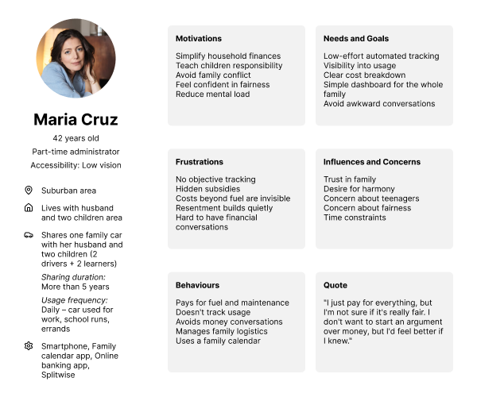
"I just pay for everything, but I'm not sure if it's really fair. I don't want to start an argument over money, but I'd feel better if I knew." Maria, one of three personas built from the research
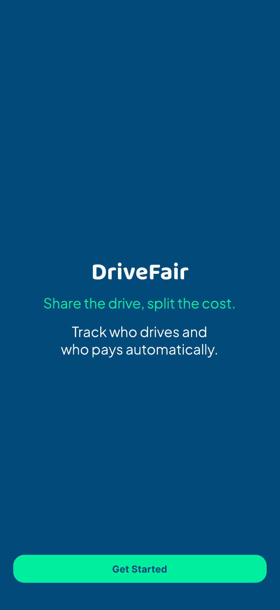
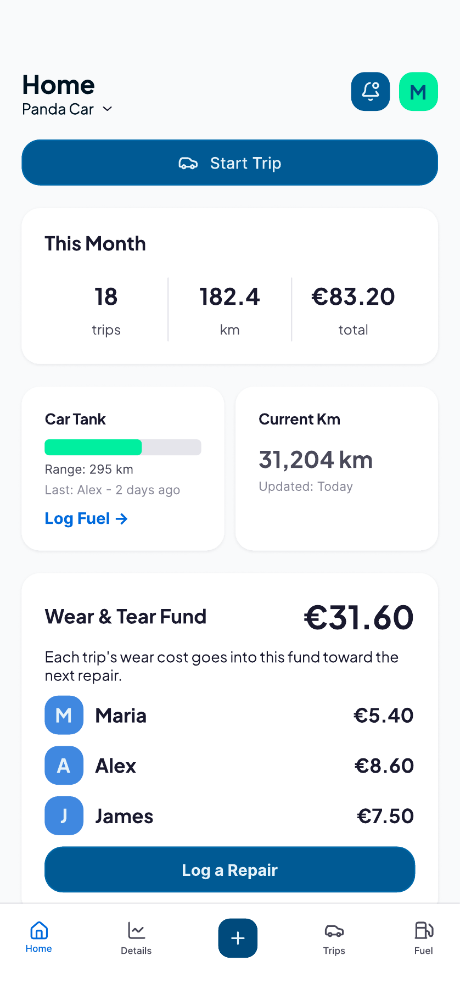
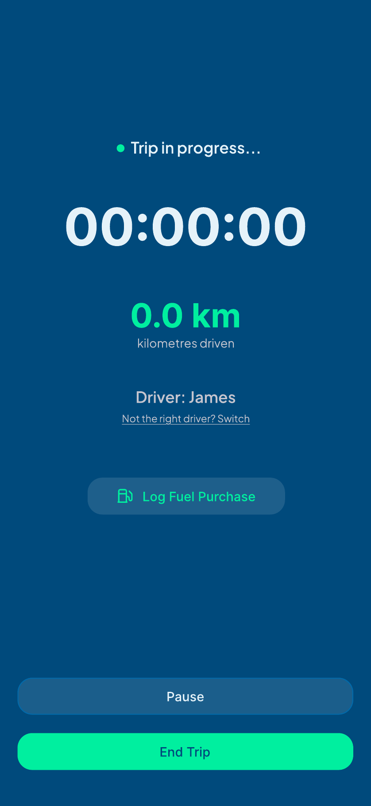
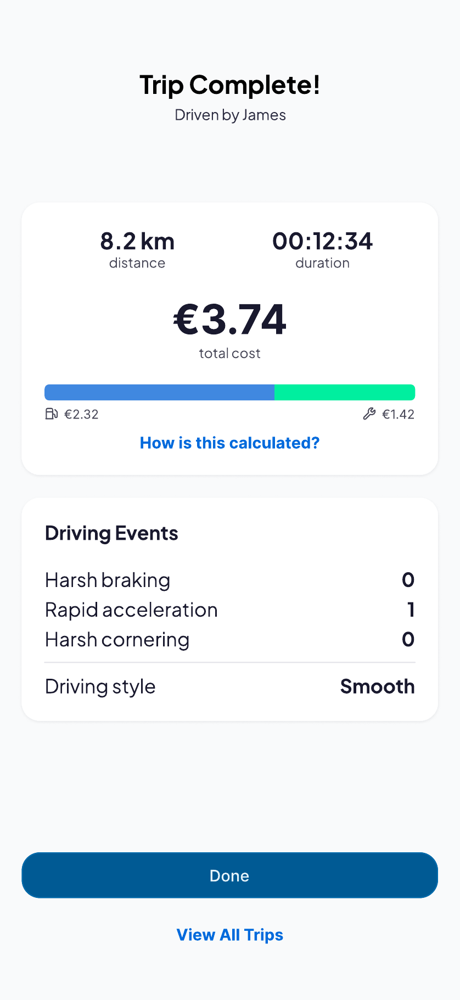
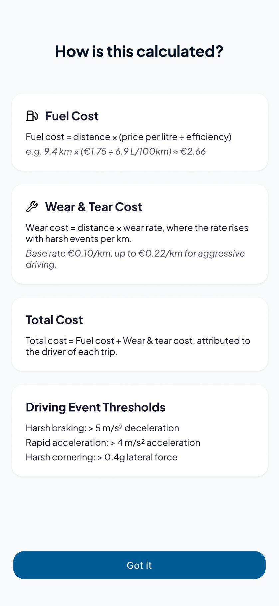
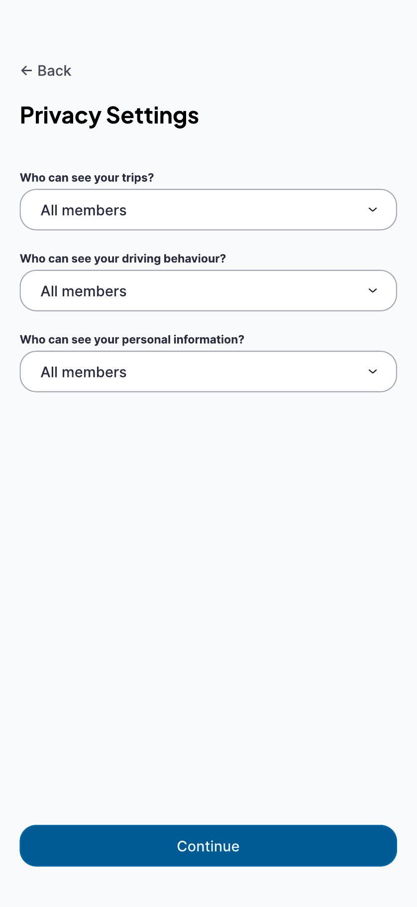
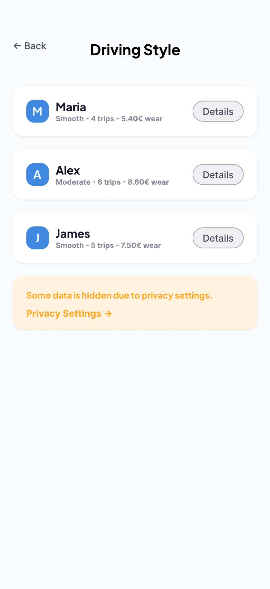
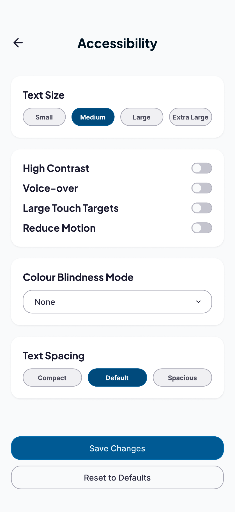
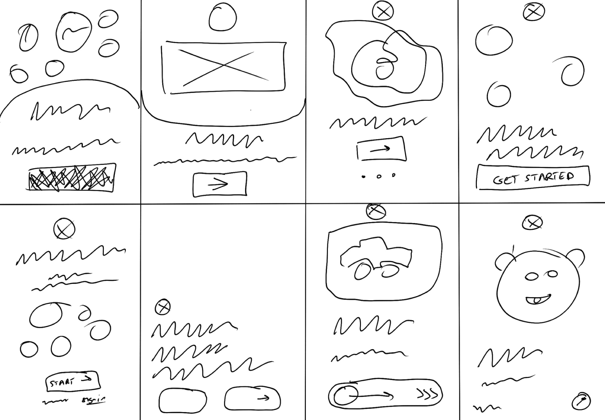
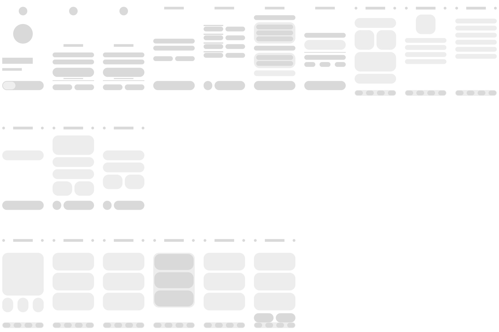
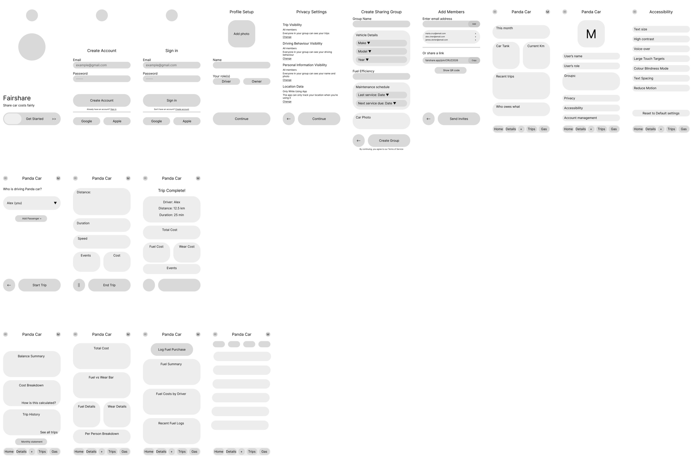
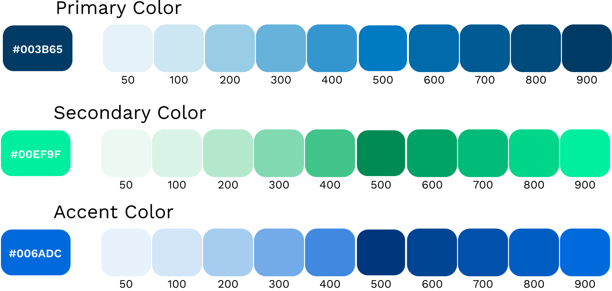
2.4 → 4.9
perceived fairness out of 5, before vs after seeing DriveFair (p = 0.031).
2.5 → 4.8
trust out of 5. Every participant rated both higher, with no exceptions (p = 0.031).
6 of 6
participants preferred DriveFair to their current method.
"I'm very happy to know that there's a solution for a problem I've been having for a long time... this problem has been recognised." Participant, Deliver phase